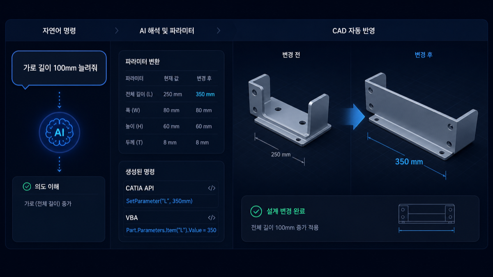

검사 AI
제품 이미지 기반 불량 검출

제품 이미지에서 불량 의심 영역을 검출하고 Heatmap으로 판정 근거를 표시합니다.
Pain Points
How it works
제품 이미지에서 불량 의심 영역을 검출하고 Heatmap으로 판정 근거를 표시합니다.

자연어 설계 명령을 CAD 파라미터와 실행 가능한 코드로 변환합니다.

센서, 알람, 정비 이력, SOP를 연결해 이상징후와 점검 우선순위를 제안합니다.
Solutions
Field Projects / Proof
고객명과 세부 정보는 공개 전 단계라 익명화했습니다. 프로젝트 성격과 목표 지표만 밝힙니다.
Why PETA
Process